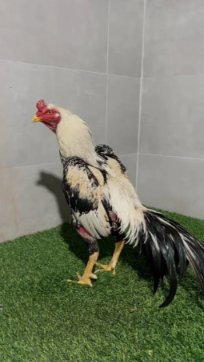

Conhecer
Aprender sobre a raça com fontes e contexto.
UM PORTAL PARA QUEM VALORIZA A CRIAÇÃO
Tradição, genética, beleza e excelência na criação.
Um espaço dedicado a conhecer a raça, compartilhar boas práticas e colocar o bem-estar animal sempre em primeiro lugar.

O Índio Mura faz parte de uma tradição de criação que merece ser conhecida com responsabilidade.
Este portal reúne informação introdutória, boas práticas de manejo e espaço para a comunidade compartilhar registros autênticos. Como há variações entre linhagens e regiões, não atribuímos padrões oficiais sem documentação verificável.
Explore o manualAprender sobre a raça com fontes e contexto.
Priorizar saúde, espaço e bem-estar em cada etapa.
Valorizar diversidade e criação responsável.
Registros da raça e do cuidado cotidiano, organizados por tema.
As imagens desta demonstração são ilustrações abstratas, não fotografias de exemplares Índio Mura. Envie fotos próprias e autorizadas para compor um acervo autêntico.
Uma criação responsável começa com ambiente seguro, manejo calmo, água limpa, alimentação adequada e acompanhamento veterinário. Aves não devem ser submetidas a práticas que causem sofrimento ou ferimentos.
Boas práticas de manejoUm guia introdutório organizado para apoiar conversas com profissionais e decisões responsáveis.
Nota técnica: conteúdo educativo geral. Nutrição, vacinação, prevenção e tratamento devem ser definidos com médico-veterinário e conforme as regras sanitárias locais. Este portal não substitui orientação profissional.
Notas práticas para observar, aprender e cuidar melhor.
Planejamento do viveiro, abrigo contra intempéries e espaço para comportamentos naturais.
Ler artigo ↗Pequenas rotinas que ajudam a perceber mudanças e manter um ambiente mais saudável.
Ler artigo ↗Boas práticas para documentar fotos, origem e informações sem criar alegações sem comprovação.
Ler artigo ↗Não. As informações sobre características são apresentadas com cautela. Consulte documentação de associações e profissionais qualificados antes de tratar qualquer característica como padrão oficial.
Não. O manual é educativo e não substitui avaliação, diagnóstico ou prescrição de um médico-veterinário.
Use o contato abaixo. Envie imagens próprias ou com autorização explícita, além da legenda e da categoria. A publicação depende de revisão editorial.
Esta versão é uma interface demonstrativa. Para receber e armazenar mensagens com segurança, conecte um serviço de formulário com proteção contra spam e política de privacidade publicada.
Tem uma dúvida, sugestão ou foto autorizada para compartilhar? Conte um pouco para a gente.